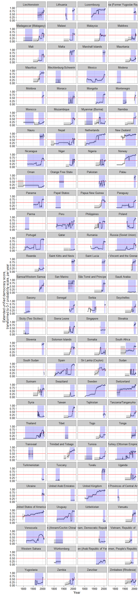
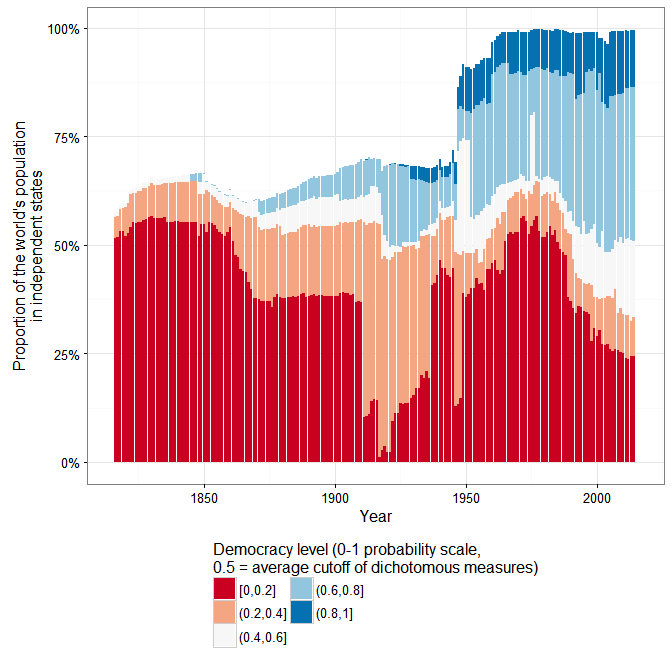
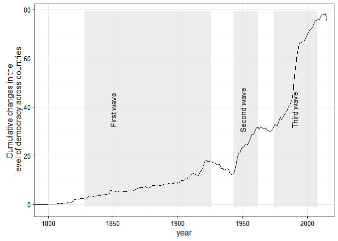
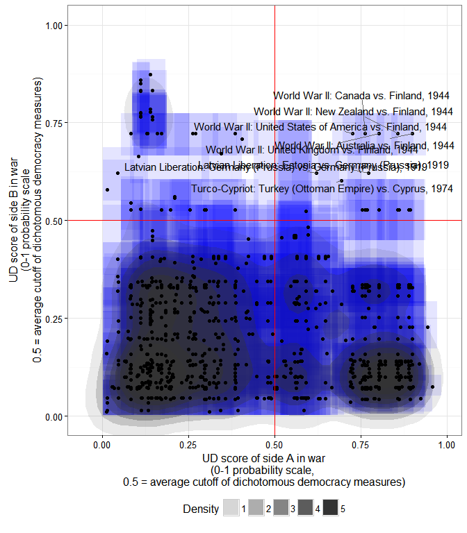

(Of interest primarily to people interested in measuring democracy in the 19th century, or creating latent variable indexes of democracy for fun. Contains a small amount of code.)
If you have followed the graphics-heavy posts in this blog, you may have noticed that I really like the Unified Democracy Scores developed by Daniel Pemstein, Stephen Meserve, and James Melton. The basic idea behind this particular measure of democracy, as they explain in their 2010 article, is as follows. We have a wealth of measures of democracy (some large-scale projects like the Polity dataset or the Freedom in the World index, some small “boutique” efforts by political scientists developed for a particular research project). Though these measures are typically highly correlated (usually on the 0.8-0.9 range), they still differ significantly for some countries and years, differences that are both conceptual (researchers disagree about the essential characteristics of democracy) and empirical (researchers disagree about whether a given country-year is democratic according to a particular definition). PMM argue that we can thus assume that these measures are all getting at a latent trait that is only imperfectly observed and conceptualized by the compilers of all the datasets purporting to measure democracy, and that we can estimate this trait using techniques from item response theory that were originally developed to evaluate the performance of multiple graders in academic settings.
PMM then proceeded to do just that, producing a dataset that not only contains latent variable estimates of democracy for 9850 country-years (200 unique countries), but also contains estimates of the measurement error associated with these scores (derived from the patterns of disagreement between different democracy measures). This, to be honest, is one of the main attractions of the UDS for me: I get nervous when I see a measure of democracy that does not have a confidence interval around it, given the empirical and conceptual difficulties involved in producing such numerical estimates of a wooly concept like “democracy.” Nevertheless, the UDS had some limitations: for one thing, they only went back to 1946, even though many existing measures of democracy contain information for earlier periods, and PMM never made use of all the publicly available measures of democracy in the construction of the UDS, which meant that the standard errors around the scores were relatively large. (The original UDS used 10 different democracy measures for its construction; the current release uses 12,[[^Measures]] but I count more than 25).
Moreover, the UDS haven’t been updated since 2014 (and then only to 2012), and PMM seem to have moved on from the project. Pemstein, for example, is now involved with measurement at the V-Dem institute, whose “Varieties of Democracy” dataset promises to be the gold standard for democracy measurement, so I’m guessing the UDS will not receive many more updates, if any. (If you are engaged in serious empirical research on democracy, you should probably be using the V-dem dataset anyway. Seriously, it’s amazing - I may write a post about it later this year). And though in principle one could use their software to update these scores, and PMM even made available an (undocumented) replication package in 2013, I was never able to make it work properly, and their Bayesian algorithms for estimating the latent trait seemed anyway too computationally intensive for my time and budget.
I think this situation is a pity. For many of my own purposes – which have to do mostly with the history of political regimes for my current project – I’d like a measure that aggregates both empirical and conceptual uncertainty about democracy in a principled way for a very large number of countries, just like I believe the UDS did. But I also would like a measure that goes back as far as possible in time, and I’d like to be able to easily reconstruct the latent index using new information (e.g., new releases of the underlying measures). The new V-dem indexes are great on one of these counts (they come with confidence intervals) but not on others (they only go back to 1900, they are missing some countries, and the full dataset is a bit unwieldy – too many choices distract me). Other datasets – the trusty Polity, the new and excellent LIED index – do go back to the 19th century, but they have no estimates of measurement uncertainty, and they make specific choices about conceptualization that I do not always agree with (and which would be incorporated into measurement and conceptual uncertainty in a UDS-style measure).
But why wait for others to do this when I can do it myself? So I went ahead and figured out how to first replicate the Unified Democracy scores without using a computationally intensive Bayesian algorithm, and then extended them both forwards to 2015 and backwards to the 19th century (in some cases tot he 18th century), using information from 28 different measures of democracy (some of them rather obscure, some just new, like the LIED index or the latest version of the Freedom House data). And I created an R package to let you do the same, should you wish to fiddle with the details or create your own version of the UDS. (Democratizing democracy indexes since 2016!). The gory details are all in this paper, which explains how to replicate and extend the scores, and contains plenty of diagnostic pictures of the result; but if you only want to see the code to produce the extended UDS scores check out the package vignette here. If you are an R user, you can easily install the package and its documentation by typing (assuming you have devtools installed, and that I’ve done everything correctly on my side):
devtools::install_github(repo = "https://github.com/xmarquez/QuickUDS")The package includes both my “extended” UDS measure (fully documented and covering 24111 country-years going all the way to the 18th century in some cases, for 224 sovereign countries and some non-sovereign territories) and a replication dataset which includes 61 different measures of democracy from 29 different measurement efforts covering a total of 24149 country-years (also fully documented). (Even if you are not interested in the UDS, original or extended, you may be interested in that dataset of democracy scores). For those poor benighted souls who use Stata or (God fobid) some awful thing like SPSS (kidding!), you can access a CSV version of the package datasets and a PDF version of their documentation here.
To be sure, for most research projects you probably don’t need this extended Unified Democracy measure. After all, most useful variables used in your typical democracy regression are unmeasured or unavailable before the 1950s for most countries, and if your work only requires measures of democracy going back to the 1900, you are better off with the new V-dem data, for example, rather than this artisanal version of the UDS. But the extended UDS is nice for some things, I think.
First, quantitative history. For example, consider the problem of measuring democracy in the USA over the entirety of the last two centuries. Existing democracy measures disagree about when the USA first became fully democratic, primarily because they disagree about how much to weigh formal restrictions on women’s suffrage and the formal and informal disenfranchisement of African Americans in their conceptualization. Some measures give the USA the highest possible score early in the 19th century, others after the civil war, others only after 1920, with the introduction of women’s suffrage, and yet others (e.g. LIED) not until 1965, after the Civil Rights Movement. With the extended UDS these differences do not matter very much: as consensus among the different datasets increases, so does the measured US level of democracy:
In the figure above, I use a transformed version of the extended UDS scores whose midpoint is the “consensus” estimate of the cutoff between democracy and non-democracy among minimalist, dichotomous measures in the latent variable scale. (For details, see my paper; the grey areas represent 95% confidence intervals). This version can be interpreted as a probability scale: “1” means the country-year is almost certainly a democracy, “0” means it is almost certainly not a democracy, and “0.5” that it could be either. (Or we could arbitrarily decide that 0-0.33 means the country is likely an autocracy of whatever kind, 0.33-0.66 that it is likely some kind of hybrid regime, and 0.66-1 that is pretty much a democracy, at least by current scholarly standards). In any case, the extended UDS shows an increase in the USA’s level of democracy in the 1820s (the “Age of Jackson”), the 1870s (after the civil war), the 1920s after female enfranchisement, and a gradual increase in the 1960s after the Civil Rights movement, though the magnitude of each increase (and of the standard error of the resulting score) depends on exactly which measures are used to construct the index. (The spike in the 2000s is an artifact of measurement, having more to do with the fact that lots of datasets end around that time than with any genuine spike in the USA’s democracy score).
Just because what use is this blog if I cannot have a huge visualization, here are ALL THE DEMOCRACY SCORES, alphabetically by country (grey shaded areas represent 95% confidence intervals; blue shaded areas are periods where the country is either deemed to be a member of the system of states in the Gleditsch and Ward list of statte system membership since 1816, i.e., independent, or is a microstate in Gleditsch’s tentative list):

A couple of things to note. First, scores are sometimes calculated for some countries for periods when they are not generally considered to be independent; this is because some of the underlying data used to produce them (e.g., the V-Dem dataset) produce measures of democracy for existing states before they became independent – basically measuring how “open” their politics were under imperial governance (see, e.g., the graphs for India or South Korea). Second, confidence intervals vary quite a bit, primarily due to the number of measures of democracy available for particular country-years and the degree of their agreement. For some countries, the range of possibilities is so large (because too few datasets bother to produce a measure for a period, or the ones that do disagree radically) that the extended UD score is meaningless, but for most country-years (as I explain in my paper my paper) its standard error is actually much smaller than the standard error of the “official” UDS, making the measure more useful for empirical research. But in general the scores tend to capture intuitive movements (which is unsurprising, since they are based on all existing measures of democracy); see the graphs for Chile or Venezuela, for example. And using these scores we can get a better sense of the magnitude of the historical shifts towards democracy in the last two centuries.
For example, according to the extended UDS (and ignoring measurement uncertainty, just because this is a blog), a good 50% of the world’s population today lives in countries that can be considered basically democratic, but only around 10% live in countries with the highest scores (0.8 and above):

And Huntington’s three waves of democratization seem clearly visible in the data (again ignoring measurement uncertainty):

But suppose you are not into quantitative history. There are, nevertheless, a couple of use cases where long-run, quantitative data about democracy with estimates of uncertainty is likely to be useful. Consider, for example, the question of the democratic peace, or of the relationship between economic development and democracy – two questions that benefit from very long-run measures of democracy, especially measures that can be easily updated, like this one.
I may write more about this later, but here’s what this dataset might tell us about the basic stylized fact of the “democratic peace.” Using the revised list of interstate wars by Gleditsch, we can quickly create a scatterplot of the mean extended UD score of each side in an interstate war, and calculate the 2-d density distribution of these scores while accounting for their measurement uncertainty:

The x- coordinate of each point is the mean extended UD score (in the 0-1 probability scale where 0.5 is the consensus cutoff between democracy and non-democracy in the most minimalistic measures) of side A in a war listed by Gleditsch; the y-coordinate is the mean extended UD score of side B; each blue square is the 95% “confidence rectangle” around these measures; the shaded blobs are the 2-d probability densities, accounting for measurement uncertainty in the scores. As we can see, the basic stylized fact of a dyadid democratic peace is plausible enough, even after accouting for measurement uncertainty, at least for countries which have a high probability of being democratic (0.8 and above). In particular, countries whose mean extended UD democracy score is over 0.8 (in the transformed 0-1 scale) have not fought one another, even after accounting for measurement uncertainty. (Though they have fought plenty of wars with other countries, as the plot indicates). But note that the dyadic democratic peace only holds perfectly if we set the cutoff “being a democracy” quite high (0.8 is in the top 10% of country-years in this large sample; few countries have ever been that democratic); as we go down to the 0.5 cutoff, exceptions accumulate (I’ve labeled some of them).
Anyway, I could go on; if you are interested in this “artisanal” democracy data (or in creating your own version of these scores), take a look at the paper, and use the package – and let me know if it works!
(Code for this post is available here. Some of it depends on a package I’ve created but not shared yet, so you may not be able to replicate it all.)